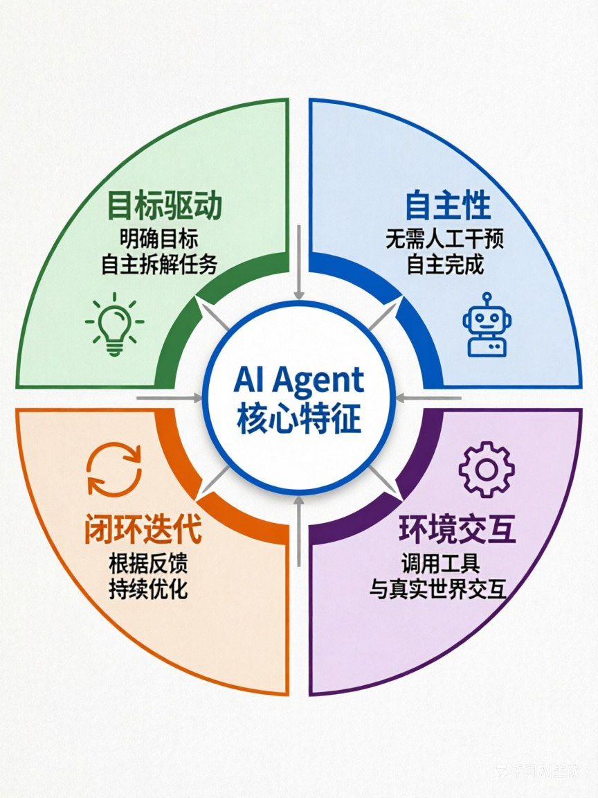

第一章：什么是AI Agent？—— 为什么它正在改变AI的未来
章节核心目标
彻底搞懂AI Agent的核心定义和核心特征，明确区分「传统程序/纯LLM/AI Agent」的本质差异，建立基础认知，为后续所有章节打下基础。
开篇思考：AI到底能帮你做什么？
让我先问几个问题：
场景1： 你对ChatGPT说："帮我查一下上海今天天气怎么样。"
- ChatGPT会回答你："抱歉，我的知识截止到训练时间，无法获取实时天气信息。"
- 你得到了一个"回答"，但问题没解决。
场景2： 你对AI Agent说："帮我查一下上海今天天气，如果是晴天就帮我订一张去上海的机票，如果是雨天就帮我订购雨具外卖送到家。"
- AI Agent会先调用天气API查询实时天气
- 然后根据天气情况，调用机票API或外卖API
- 最后告诉你："已经帮你订好了明天去上海的机票/雨具已经在路上了"
- 你的问题被真正解决了。
这就是核心区别：
- 传统程序：只能按固定规则执行，超出规则就失效
- 纯LLM（如ChatGPT）：能回答问题，但只能"被动应答"
- AI Agent：能真正"做事"，从对话工具变成了行动主体
一、一个比喻，秒懂AI Agent的本质
为了让你彻底搞懂这三者的区别，我用一个生活化的场景来比喻：点咖啡。
1.1 传统程序 = 自动售货机
想象你在商场里看到一台自动售货机：
它的逻辑是：
- 投币 → 选择商品 → 机器吐出商品
- 规则完全固定，每一步都写死
它的问题：
- 你想让它帮你"加热咖啡"，它完全做不到，因为没有这个功能
- 你想让它"推荐一款适合现在天气的咖啡"，它做不到，因为它没有思考能力
- 超出规则的功能，它完全无法工作
这就是传统程序的本质：
- 输入 → 按固定规则处理 → 输出
- 一旦遇到规则之外的情况，就彻底失效
1.2 纯大模型LLM = 万能顾问
想象你雇了一个非常博学的顾问，他能回答任何问题：
你问他："上海今天天气怎么样？"
- 他能告诉你："上海今天晴天，气温18-26度"
- 但他不会帮你做任何事
你问他："能帮我订一张去上海的机票吗？"
- 他会说："很抱歉，我只能提供信息，无法帮你订票"
- 他能理解你的需求，但没有行动能力
这就是纯LLM的本质：
- 能理解、能回答、能生成内容
- 但只能"被动应答"，无法和真实世界交互
- 它的能力局限在"虚拟世界"
1.3 AI Agent = 专属私人助理
现在想象你雇了一个专属助理：
你对他说："帮我安排下周去上海的差旅，预算3000以内，要靠近会场，避开我之前踩过坑的酒店。"
他会怎么做？
- 理解你的目标（不是简单的问答，而是理解"我要完成这件事"）
- 自主拆解任务：
- 先查会场地址
- 查附近的酒店
- 筛选掉你之前不喜欢的酒店
- 查往返机票
- 核对预算
- 下单预订
- 同步到你的日历
- 设置出行提醒
- 调用工具执行：调用机票API、酒店API、日历API
- 根据反馈优化：如果某酒店满房，会自动更换同价位的其他酒店
- 完成目标并汇报："已经帮你订好了，详细信息如下..."
全程你只需要说一句话，剩下的所有工作都是他自主完成的。
二、AI Agent的4个核心特征（缺一不可）
通过上面的比喻，你应该已经感觉到：AI Agent和传统程序、纯LLM的核心区别是什么。
让我给你一个更清晰的定义：
🎯 核心定义
AI Agent = 以大模型为核心大脑 + 能自主理解目标 + 能拆解任务 + 能调用工具 + 能执行操作 + 能根据反馈优化迭代的完整智能体
用一句话总结：Agent是一个"目标驱动的自主闭环智能体"
📊 4个核心特征
| 特征 | 核心含义 | 和传统程序/LLM的区别 | 具象案例：点咖啡 |
|---|---|---|---|
| 1. 目标驱动 | 只需要给最终目标，不需要给每一步的执行指令，自主拆解任务 | 传统程序需要写死每一步；LLM不会主动做事 | 你只需说"点一杯符合我习惯的无糖冰美式到公司"，Agent会自主拆解成：查口味→选店铺→下单→同步地址 |
| 2. 自主性 | 无需人工逐轮干预，能自主完成多步操作，形成闭环 | 传统程序遇到异常就停止；LLM只能回答问题 | Agent下单时发现店铺闭店，会自动更换同品类的其他店铺，重新下单，不需要你干预 |
| 3. 环境交互与工具使用 | 能调用外部工具、和真实世界交互，突破LLM的能力边界 | 传统程序工具是写死的；LLM无法调用外部工具 | Agent会调用外卖API、天气API、地图API，完成真实的操作 |
| 4. 闭环迭代 | 能根据执行结果的反馈，自主优化后续的决策和行动 | 传统程序不会自我优化；LLM没有行动也就没有反馈 | Agent根据"咖啡店闭店"的反馈，优化决策，更换店铺，直到完成目标 |
💡 为什么叫"闭环"？
闭环 = 感知 → 决策 → 行动 → 反馈 → 再感知 → 再优化
用点咖啡的案例：
- 感知：用户说"点一杯冰美式"
- 决策：用户喜欢无糖、要送到公司、预算30元以内，决定调用XX咖啡外卖API
- 行动：调用外卖API下单
- 反馈：API返回"该店铺已闭店"
- 再感知：收到反馈，知道下单失败
- 再优化：更换同品类的其他店铺，重新下单
- 循环：直到成功完成目标
这就是Agent和传统程序、LLM的核心分水岭：传统程序是线性的，LLM是单次应答的，只有Agent是闭环迭代的。
三、认知纠偏：90%的人都搞错的「LLM vs Agent」
这是我见过的最高频的认知错误，很多人误以为：
- ❌ "ChatGPT就是Agent"
- ❌ "LLM = Agent"
- ❌ "能用对话的AI就是Agent"
让我给你一个清晰的关系图：
🔍 核心结论
LLM是Agent的"大脑"，但LLM ≠ Agent
Agent = LLM（大脑） + 记忆系统（数据仓库） + 工具调用能力（手脚） + 感知能力（五官） + 反馈优化机制（自我迭代）
📋 对比案例
纯ChatGPT对话 vs 基于ChatGPT搭建的差旅Agent
| 对比维度 | 纯ChatGPT对话 | 基于ChatGPT的差旅Agent |
|---|---|---|
| 你问："帮我安排下周去上海的差旅" | 回答："我可以给你一些建议..." （只能提供信息） |
执行：开始查询机票、酒店、做行程、同步日历 （真正在做事） |
| 能力 | 只能回答问题、生成内容 | 能理解目标、拆解任务、调用工具、执行操作 |
| 交互 | 你问它答，单次应答 | 闭环迭代，自主完成多步操作 |
| 和真实世界的连接 | 无 | 能调用API、能操作系统、能和真实世界交互 |
| 记忆 | 只有上下文窗口，对话长了就忘 | 有完整的记忆系统，长期记住你的偏好 |
🤔 那为什么有人说"ChatGPT是Agent"？
这里有两个概念容易混淆：
1. ChatGPT本身（纯LLM）
- 只能对话，不能调用工具
- 不是Agent
2. 基于ChatGPT搭建的应用
- 比如OpenAI的"Assistant API"功能，可以给ChatGPT加工具调用能力
- 这个"带工具的ChatGPT" = Agent
- 本质是：LLM + 工具调用 = Agent
记住一个核心公式：
LLM（大脑） + 工具调用（手脚） + 记忆系统（数据仓库） + 反馈优化（自我迭代） = AI Agent（完整智能体）
四、为什么AI Agent是AI的未来？
你可能会问："为什么这么多人说Agent是下一代AI的核心形态？它到底解决了什么问题？"
让我给你一个最直接的答案：
🎯 AI的终极目标：解放人力，帮人"完成事情"
过去几十年，AI的发展经历了几个阶段：
阶段1：从规则到学习
- 早期AI = 写死规则的专家系统
- 核心问题：规则写不完，泛化能力为0
阶段2：从学习到理解
- 深度学习爆发，AI能识别图片、语音
- 核心问题：只能做单一任务，跨场景能力弱
阶段3：从理解到对话
- 大语言模型（LLM）诞生，AI能理解、生成人类语言
- 核心突破：通用交互能力，普通人都能用
- 核心局限：只能"说"，不能"做"
阶段4：从对话到行动 —— 这就是Agent
- Agent让AI从"对话工具"变成了"行动主体"
- 核心突破：不仅能理解、能回答，还能调用工具、执行操作、完成目标
- 这是AI真正能替代人类重复劳动的关键一步
📊 真实案例：某企业的数据报表自动化
传统方式：
- 2个数据分析师
- 每天做4小时
- 人工从多个系统导出数据
- 手动清洗、整理、制作报表
- 人工核对数据准确性
- 成本高、效率低、容易出错
用Agent后：
- 1个数据分析师 Agent
- 10分钟完成全部工作
- 自动从多个系统API拉取数据
- 自动清洗、整理、制作报表
- 自动交叉校验数据准确性
- 异常情况自动标记、人工审核
- 成本降低80%、效率提升24倍、准确率100%
这就是Agent的价值：它让AI不再是"锦上添花"的对话玩具，而是真正能"降本增效"的生产力工具。
五、本章核心小结
✅ 核心结论
- AI Agent的本质：以大模型为核心大脑，能自主理解目标、拆解任务、调用工具、执行操作、根据反馈优化迭代的完整智能体
- 和传统程序、纯LLM的核心区别：
- 传统程序 = 自动售货机（固定规则，超出规则就失效）
- 纯LLM = 万能顾问（能回答问题，但不会主动做事）
- AI Agent = 专属私人助理（目标驱动、自主闭环、环境交互、持续迭代）
- AI Agent的4个核心特征：
- 目标驱动：只需给最终目标，自主拆解任务
- 自主性：无需人工逐轮干预，能自主完成多步操作
- 环境交互与工具使用：能调用外部工具，突破LLM能力边界
- 闭环迭代：能根据反馈优化决策，持续迭代
- LLM vs Agent的关系：LLM是Agent的"大脑"，但LLM ≠ Agent；Agent是包含"大脑+记忆+手脚+感官"的完整智能体
- 为什么Agent是AI的未来：它让AI从"对话工具"变成了"行动主体"，真正实现了用AI替代重复、复杂的全流程工作
六、下章预告
这一章，我们搞懂了"什么是AI Agent"。
但有一个问题：Agent这个概念，并不是随着ChatGPT才出现的。早在1950年代，"智能体"的概念就已经诞生了。
那为什么偏偏是大语言模型，引爆了Agent的全民革命？LLM到底给Agent带来了什么革命性的突破？
下一章，我们会追溯Agent的进化史，搞懂从规则引擎到LLM的完整演进脉络，理解为什么大语言模型是Agent从实验室走向大众的关键。
📊 配图说明
图1：传统程序 vs 纯LLM vs AI Agent 对比图
Traditional Program"] T1["📋 规则驱动"] T2["❌ 无法泛化"] T3["🔧 固定逻辑"] end subgraph LLM["纯LLM
Pure LLM"] L1["🧠 推理能力"] L2["⚠️ 幻觉问题"] L3["💭 对话能力"] end subgraph Agent["AI Agent
AI Agent"] A1["🎯 目标驱动"] A2["🔄 自主循环"] A3["🛠️ 工具调用"] end style Traditional fill:#E0E0E0,stroke:#9E9E9E,stroke-width:2px style LLM fill:#FFE0B2,stroke:#FF9800,stroke-width:2px style Agent fill:#C8E6C9,stroke:#4CAF50,stroke-width:2px
图2：AI Agent 4大核心特征环形图

💡 学习小贴士
- 这一章的核心是建立认知，不需要记住所有细节，理解"Agent是目标驱动的自主闭环智能体"这个核心定义就够了
- 如果你用过ChatGPT，可以试试想一下：它能不能算Agent？为什么？
- 如果你对"闭环迭代"还有点模糊，没关系，第三章会详细拆解Agent的工作流程